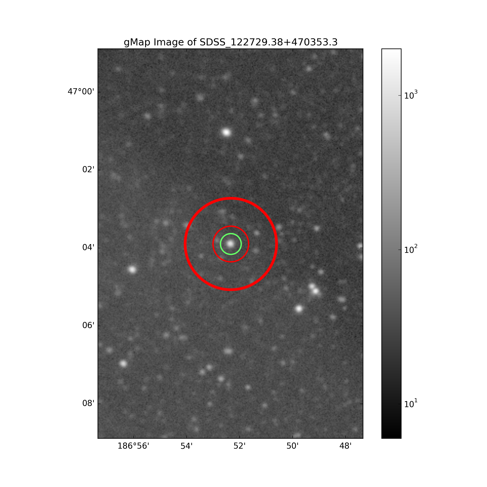

|  |
| 1 - (0 power scale) - Hotspot |
| 2 - (1 power scale) - Mask Edge |
| 4 - (3 power scale) - exptime |
| 8 - (4 power scale) - respose |
| 16 - (5 power scale) - nonlinearity |
| 32 - (6 power scale) - detector edge |
| 64 - (7 power scale) - Backgrond hotspot |
| 128 - (8 power scale) - Backgound mask |